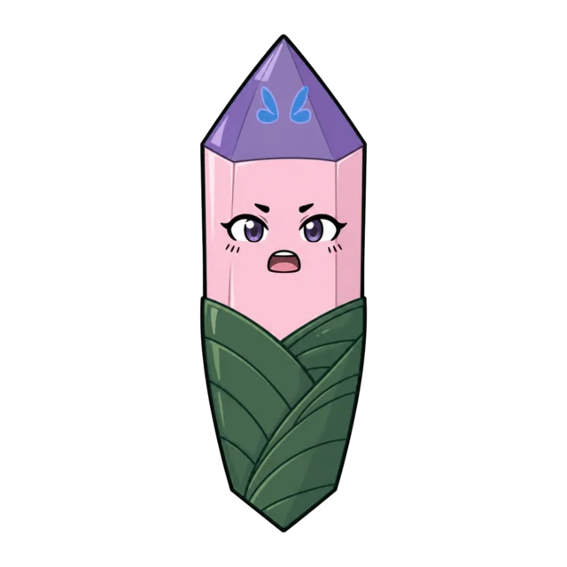

現在のビルドの内部
カルマは対話以上に変化します。
光、中立、闇のカルマの道は、シールドの挙動、警告の予兆、敵の攻撃性、ボスのフェーズを変えます。物語が、そのままプレイの仕方を変えていきます。
ビルドステータス 制作進行中全10の対話ワールド
10 の世界すべての会話用背景を、Ena から Deka まで、降りていく順に並べています。


現在の制作版 UI
現在のビルドのレベル選択、会話、リザルト画面。
いまのゲームの流れを、出会う順に紹介します。レベル選択、会話、節目での選択、そして勝利画面、または別画面の敗北画面です。以下のビジュアルはすべて、制作中の Unity プロジェクトのアートを使っています。
天空ルートでは、10 の 100 レベルの章にわたって生成されたレベルが選択されます。
制作メニューは 100 レベルの章に 10 の場所をマッピングし、選択したランに直接開きます。

 201
201会話は、そのロケーションの中で行われます。
キャラクターのポートレート、ロケーションのアート、話者の名札が、ひとつの縦長フレームにまとまっています。


Shash
それでは、先に進みましょう-しかし、それが簡単だとは思わないでください。 Tria は、これまでのすべてが単なる些細なことのように思えるでしょう。
04 / マイルストーンの選択
答えは降下の一部になります。
ローカルレベル 90 と 100 では、対話により実行が解決される前に、専用パネルがスペアオアキルの決定を求めます。

見逃す
倒す
05 / 結果メニュー
勝てば先へ進み、負ければ同じ挑戦に戻ります。
現在のビルドには 2 つの別々の結果状態があります。PanelWin はリプレイと次のレベルを提供しますが、PanelOver は 1 つの紛れもないリプレイ アクションを保持します。
勝利 · PanelWin
降下クリア
 リプレイ
次へ
リプレイ
次へ
リプレイ
次へ
会話の登場キャラクター
降下の途中で出会う者たち。
製品版で開眼・閉眼の両ポートレートが揃っている25人のキャラクターを、すべて以下に掲載しています。カードにカーソルを合わせるかフォーカスすると、表情が切り替わります。





ゲーム概要
Ball is God?! は、回転するタワーを落ちていくハードコアなアーケードゲームです。
コンセプト
Espa を導いて、神聖な塔を降りていきます。ミスひとつでプレイが終わることもあり、大きな選択によって世界の遊び方が変わります。
現在のビルド
10 のロケーションシーン、プロシージャルなタワー生成、コンボスマッシュ、スワイプシールド、ボス構成、分岐ダイアログ、制作メニュー、即時表現可能なポートレートが実装されています。
対象プレイヤー
歯ごたえのあるモバイルアーケード、ハイリスク・ハイリターンなタイミング勝負、ボス戦が好きで、追いかけたい物語もほしい人。
ステータス
制作進行中。最近の作業は、ランタイムのシステム、ワールドのアート、テスト、そしてスマホでの遊び心地です。
特徴
Ball is God?! でやること
ドラッグ回転式の垂直降下
水平方向のドラッグにより、自動的に落下する Espa の周りでタワーが回転し、隙間、危険、安全なプラットフォームが整列します。
ハードコアなアーケードのプレッシャー
無防備なまま 1 回当たれば、そこでプレイ終了。タワーをよく見て、一手ごとにタイミングを計る必要があります。
ボスと神話の世界
10 のロケーションのシーンには、それぞれ専用のボスがいて、物語を次の世界へとつないでいきます。
ルールを変える選択
慈悲、力、カルマは対話、シールドルール、敵の攻撃性、電信、ボスフェーズを変更します。
ゲームプレイループ
Ball is God?! の遊び方
- ステップ01降下を読む
落ちながら、次の足場、すき間、危険物をよく見て、安全なタイミングを探しましょう。
- ステップ02タワー回転
水平方向の抗力は Espa の周りを回転させ、安全なプラットフォームまたは意図的なギャップを整列させます。
- ステップ03リスクとスマッシュ
3 つのプラットフォームをスキップしてコンボスマッシュをチャージし、シールドが 1 つの致命的なミスをカバーしている間に構造物を突破します。
- ステップ04結果を選択してください
慈悲と力がカルマ、対話、そして敵とボスに持ち込まれるゲームプレイルールを形作ります。
ストーリー・世界観
選択がどこまでもついてくる、神話の塔。
Ball is God?! は、幼少期にモバイル垂直降下アーケードに魅了されたことから始まりました。隙間を読み、素早く反応し、本能に従って生き残るというものです。
この形式なら、もっと多くのものを乗せられます。ボス、個性的なキャラクター、物語、そして道徳的な葛藤です。現在のプロジェクトでは、Espa が 10 のロケーションのシーンと風変わりなキャラクターたちの間を進み、選択が物語とプレイの両方を変えていきます。
そこで目指したのは、ボス戦の緊張感と、物語重視の RPG のような結果の重みを持つ、シンプルな垂直降下アーケードでした。
- ビジョン
- 神話の物語がある回転タワーアーケード
- 現在のワールド規模
- 10ロケーションとボス構成
- ストーリーステージ
- 長編ストーリー草稿完成
- 制作状況
- 制作進行中
ひと目でわかる
ドラッグだけのシンプルな操作と、ルールを変えていく物語。
ドラッグで回すだけの操作は、思い通りにすぐ反応します。ほかの面白さは、神話の世界、ボス、プレイを変える選択から生まれます。
現在のビルドには、決定論的なタワー生成、ハイリスク・ハイリターンのスマッシュ、一撃での失敗、ボス、分岐する会話、そしてゲームプレイを変えるカルマが、すでにそろっています。
- ジャンル
- ストーリー重視の垂直降下アーケード
- 目標プラットフォーム
- iOS / Android
- 1 回のプレイの形
- 腕前が問われるハイスピードなプレイ
- スタジオ
- WillowinWorlds
アセットをダウンロード
Ball is God?! プレスおよびクリエイターのアセット
報道、パブリッシャーのレビュー、ストアページの参考用の WebP プレビューです。フル解像度のソースファイルは、ご依頼に応じて提供します。
ブランドとキャラクター
ゲームアイコンと、完全な制作ダイアログのポートレートを持つ 25 人の現在のキャラクターすべて。名前は Unity ローカライゼーション キーと一致します。
Espaプレイヤーキャラクターのポートレート。
Revla制作版の会話ポートレート。
Shash制作版の会話ポートレート。
Shush制作版の会話ポートレート。
Shish制作版の会話ポートレート。
Gigo制作版の会話ポートレート。
Goga制作版の会話ポートレート。
Giga制作版の会話ポートレート。
Askold制作版の会話ポートレート。
Miras制作版の会話ポートレート。
Hih制作版の会話ポートレート。
Heh制作版の会話ポートレート。
Hah制作版の会話ポートレート。
Musya制作版の会話ポートレート。
Dusya制作版の会話ポートレート。
Susya制作版の会話ポートレート。
Vladus制作版の会話ポートレート。
Frisha制作版の会話ポートレート。
Luren制作版の会話ポートレート。
Kuren制作版の会話ポートレート。
Don Yagon制作版の会話ポートレート。
Lurya制作版の会話ポートレート。
Khleya制作版の会話ポートレート。
Varon制作版の会話ポートレート。
White制作版の会話ポートレート。
メニュー背景
天体レベル選択システムで使用されている現在のプロダクションアートワーク。
 天体メニュー
天体メニュー垂直降下ワールド
Ena から Deka まで、現在実装されている10ロケーションの背景を順番に収録した完全セット。
 01・スカイワールドEna 垂直降下背景。
01・スカイワールドEna 垂直降下背景。
 02 · 宇宙の世界Dyo の垂直降下背景。
02 · 宇宙の世界Dyo の垂直降下背景。
 03・嵐の世界Tria の垂直降下背景。
03・嵐の世界Tria の垂直降下背景。
 04 · 雪の世界Tessera 垂直降下背景。
04 · 雪の世界Tessera 垂直降下背景。
 05 · 火山の世界Pente の背景。ゲーム内でアニメーションします。
05 · 火山の世界Pente の背景。ゲーム内でアニメーションします。
 06 · 海の世界Eksi 垂直降下背景。
06 · 海の世界Eksi 垂直降下背景。
 07 · 砂漠の世界Epta 垂直降下背景。
07 · 砂漠の世界Epta 垂直降下背景。
 08 · 森の世界Ohto 垂直降下背景。
08 · 森の世界Ohto 垂直降下背景。
 09 · 洞窟の世界Ennea の垂直降下背景。
09 · 洞窟の世界Ennea の垂直降下背景。
 10 · 地獄の世界Deka の垂直降下背景。
10 · 地獄の世界Deka の垂直降下背景。
ストーリーアーケードの背景
会話ロケーションの完全セット。Hall of Light と、全10ワールドの背景を収録しています。
 00 · 光の殿堂
00 · 光の殿堂 01 · 空の会話
01 · 空の会話 02 · 宇宙の会話
02 · 宇宙の会話 03 · 嵐の会話
03 · 嵐の会話 04 · 雪の会話
04 · 雪の会話 05 · 火山の会話
05 · 火山の会話 06 · 海の会話
06 · 海の会話 07 · 砂漠の会話
07 · 砂漠の会話 08 · 森の会話
08 · 森の会話 09 · 洞窟の会話
09 · 洞窟の会話 10 · 地獄の会話
10 · 地獄の会話
Ball is God?! FAQ
Ball is God?! についてのよくある質問
Ball is God?!とはどんなゲームですか
ハードコアな垂直降下アーケードです。落ちていく Espa を中心にタワーを回転させ、安全な着地をスキップしてスマッシュをため、神話の世界を突き破っていきます。
Ball is God?! はどう遊びますか?
水平方向にドラッグしてタワーを回転させ、3 つのプラットフォームをスキップしてスマッシュをチャージし、クールダウン シールドが致命的な攻撃を吸収する必要がある場合は垂直方向にスワイプします。
Ball is God?! はもう公開されていますか?
まだです。ランタイムのシステム、ワールドのアート、ストーリー、テストの各方面で制作を進めています。公開日は未定です。対象プラットフォームは iOS と Android です。
Ball is God?! の特徴は何ですか?
ハイリスク・ハイリターンのアーケードならではの緊張感に、10 のロケーション、そして会話、敵、攻撃の予兆、シールド、ボスを変えるカルマが組み合わさっています。
Ball is God?! は誰が作っていますか?
WillowinWorlds は、モバイル向けのパズルゲームとアーケードゲームをつくる独立系スタジオです。
Ball is God?! のプレスアセットは使えますか?
はい、報道、パブリッシャーのレビュー、ストアの参考資料としてお使いいただけます。ソースファイルは、ご依頼がない限り非公開です。
Ball is God?! 開発ブログ
いつ何が変わったのか
- ワールドの地面と危険要素の検証
キャラクターの見せ方、決定論的な生成、トゲの危険物に対して、ビジュアルと検証をまとめて見直しました。
- 2026 年 7 月制作版 UI とキャラクターの見直し
レベル選択、共通のアクション操作、縦型の会話フレーム、キャラクターの表情の切り替えが、ひととおりそろいました。
- 2026 年 2 月プロジェクト範囲のレビュー
チームは主要なストーリー統合パスを完了し、10 の世界、道徳的選択、ボス、複数のエンディングなど、プロジェクトの全体規模をレビューしました。
- 2025年4月～5月ストーリーのリライトと能力
物語全体を書き直し、キャラクター能力を改善して、道徳的な選択がもたらす結果をより明確にしました。
- 2024 年 8 月ストーリーディレクション開始
チームは、Ball is God?! を単なるアーケード降下ゲームで終わらせず、神話の物語と、道徳的な選択というビジョンを加えることにしました。
- 2024 年 7 月オリジナルコンセプト
このプロジェクトは、スタジオ最初のゲームのアイデアとして始まりました。神聖な塔を落ちていく、スピード感のある垂直アーケードゲームです。
- 現在のビルドアーケードとストーリーがひとつのビルドに
回転タワーの降下、コンボスマッシュ、スワイプシールド、ボス、会話、カルマが、ひとつのビルドで一緒に動くようになりました。